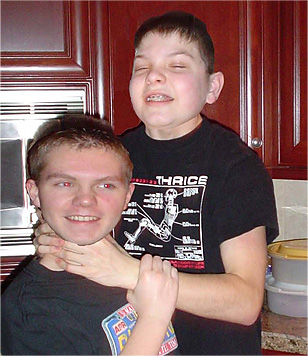
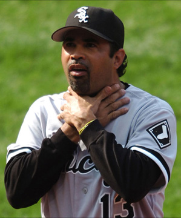
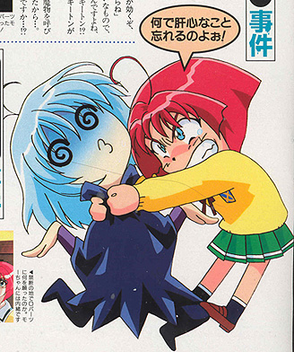
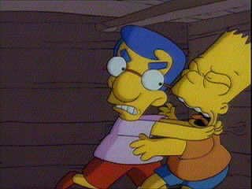
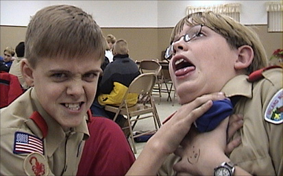

|
The Choking GameChildren grow increasingly resourceful with each passing day. They don't require fancy battery-operated toys, bleepity-bloop video games or Pokémon cards to have a good time. Those things are expensive. How's a kid gonna secure that kind of money? The best things in life are free after all. If you're a young person who's into extreme sports, hangin' out with trusted friends and kickin' back for good clean fun without cigarettes, drugs or alcohol -- you can achieve a natural high by playing the choking game. The choking game is suitable for one or more players aged 6-15. Any quiet room in your house, tool shed, or garage can be turned into a choking arena. The game requires a fair amount of concentration, so lock the door firmly behind you and crank up the iTunes. The simplest props located right inside one's own home usually work the best. Have one player bring a length of cord, maybe an Ethernet cable or jump rope. Christmas ribbons work well, but they need to be thick, double-weave, and plenty strong. Surely somewhere in the rear of dad's closet there's a necktie which hasn't been worn in several decades. If you or your neighbor has a dog, ask an adult if you can borrow the leash. Like Chinese Checkers, many different variations of the choking game exist -- but they all follow the same basic format. What's the first rule of the choking game? Everyone playing must get choked at least once. Players can draw names from a hat, take turns in alphabetical order, spin a simple rainbow dial or roll dice to establish who gets choked in what order. It's considered good form to let new or inexperienced players go first. Players use their hands, their arms, or props against the neck, to cut off the flow of oxygen to the head. When the pressure is finally released, the blood rushes back to the brain. The object of the game is to secure a level of asphyxiation which causes a fun tingle -- but not paralysis, death or permanent disability. The first player to get so high he or she passes out is the winner! If you suffer from asthma, you're likely to win the choking game over and over, so play fair. Always let less experienced participants on your team have a go first. The choking game has a rich and varied history dating back several generations. As early as the late 1800s, the choking game was referred to as Harvey Wallbanger -- named after a cocktail for grownups made from vodka or gin, orange juice, and Galliano. Pre-teen students sneaking cloves behind the Victorian preparatory portables might be seen clamping each other's necks and "banging" them up against a wall or a tree. To this day, kids genuinely appear to love the choking game as they might any national pastime. It gives players a decent head rush, causing a momentary sense of floating or flying. It's a fun, easily affordable truth-or-dare thrill ride. In groups, it's universally lauded as more than amusing to witness fellow players stumbling around, hyperventilating as they lose consciousness, making funny choking faces, watching their eyeballs roll around, falling down, and generally behaving in a silly manner. For players completely unfamiliar (or uncomfortable) with drugs, the choking game approximates a mild stoner euphoria for a few brief seconds. Meanwhile, party poopers like Sheriff Don Hunter from the the Collier County Sheriff's Office in Naples, Florida believes the choking game is actually life-threatening. "Kids have no idea how dangerous this activity is -- and they are unaware of the potentially deadly consequences." Hunter has studied the choking game phenomenon for many years. He cites players as young as 6 or 7, who lack sufficient resources to indulge in more traditional highs like drugs or alcohol. Individuals who play the choking game are "thrill seekers," Hunter warns. Children play the game mostly out of peer pressure or curiosity about their developing bodies and the associated feelings which come from experimentation. The activity is considered "cool" and "risky". Jean Porrazzo of The Enterprise news publication in Boston quotes statistics as recent as February of 2006, which claim 500 to 1000 deaths are reported each year as the result of recreational choking. Many of these deaths are initially reported as suicides. Both Oprah Winfrey and Dr. Phil have devoted multiple segments to address the phenomenon, each focusing primarily on Disastrous Outcomes. Message boards are clogged with misspelled missives from outraged parents, many of whom are shocked and deeply saddened to learn about "the Choacking Game". Bill Colburn, the police chief in the New Hampshire county where 14-year-old Rodney Webster died from choking-related asphyxiation told The Guardian that attempts to warn parents might serve only to publicize the choking game further. "I have grave concerns [about that], and that's why I'm very reluctant to talk with journalists like yourself," he said. "I really don't want to sensationalize this." In 1999, a 15-year-old British pupil at Eton in Berkshire died from playing the English version of the choking game. He was found hanging from a dressing-gown cord. During a school investigation, the headmaster determined that anywhere from 8 to 10 pupils had been involved. One popular 15-year-old female student in Lawrence, Kansas was found dead in her bedroom as the result of compression of the neck. A report by the Lawrence Journal World revealed that the girl had wrapped a plastic-coated bicycle chain lock around her neck, looped the chain over a dresser drawer, and seated herself in a position that cut off her air supply. Another 15-year-old, a sophomore Danielle Hibler at Canon-McMillan High School near Pittsburgh, Pennsylvania wrote an article entitled "A Dangerous Game Exposed" -- summarily cut from the paper at the request of the vice principal. "She put a big X on the first page," Danielle said. "I was upset about it." Angered by the decision, Danielle went to Assistant Principal Marella Kazos, who defended the decision. The day her story was banned, she went home to see news reports about the death of a 13-year-old who died from the game. Like Sleepy Smurf, the boy was found "blue and unresponsive". Journalist Hibler has since proclaimed her First Amendment rights have been violated. Choking games are marketed in a variety of kid-friendly flavors like an underground street drug, complete with a full suite of cool-sounding, parent-proof nicknames. Airplaning, American Dream, Black out, Black Hole, Breath Play, California High, Choke Out, Cloud Nine, Fainting, Flatliner, Funky Chicken, Hanging, Hyperventilation, Knockout, Pass-out, Natural High, Rising Sun, Space Cowboy, Space Monkey, Suffocation Roulette, Tingle, and The Willies. Any one of these elite titles might easily be patented, packaged and distributed by Milton Bradley, Parker Bros., or Wizards of the Coast.
1. Unexplained marks or bruises on the neck. Sounds like every suburban soccer mom in town! Everyone's passed out
around here! You can also use your family's home computer to locate new friends.
On message boards across the country, innovative American youth regularly come
together to share unique tips and tricks which make the choking game more interesting,
more exciting, and ten times more in-your-face, señor dude with a 'tude! Like Ferek420, who
anonymously posts instructions for those who "want to not die". Let's
read. Thanks, a big tip of the hat to Ferek420. And here's another great tip from Rad McAwesome, the Choking Chipmunk: Always Clear Your Browser History!
|

 Are
you lonely and sad on the playground, tired of practicing the choking game
all by yourself? Nothing's stopping you from forming a choking club in your
school, church group or community youth center. Set up an intramural Cholympics,
even -- or solicit volunteers for a donation foundation like Chokes For
Strokes And Just Plain Folks.
Online resources normally intended for concerned parents can help preadolescents easily spot
fellow choking chums from across a crowded little league field! Here's what
to look for in a potential partner:
Are
you lonely and sad on the playground, tired of practicing the choking game
all by yourself? Nothing's stopping you from forming a choking club in your
school, church group or community youth center. Set up an intramural Cholympics,
even -- or solicit volunteers for a donation foundation like Chokes For
Strokes And Just Plain Folks.
Online resources normally intended for concerned parents can help preadolescents easily spot
fellow choking chums from across a crowded little league field! Here's what
to look for in a potential partner: